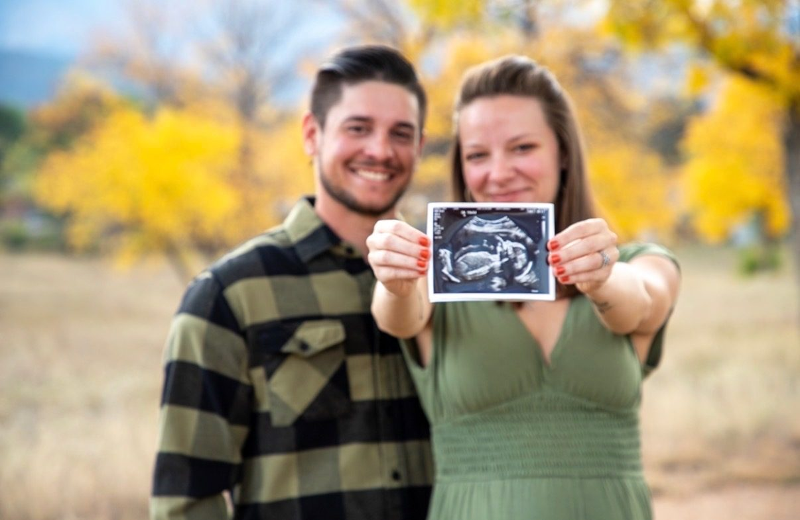
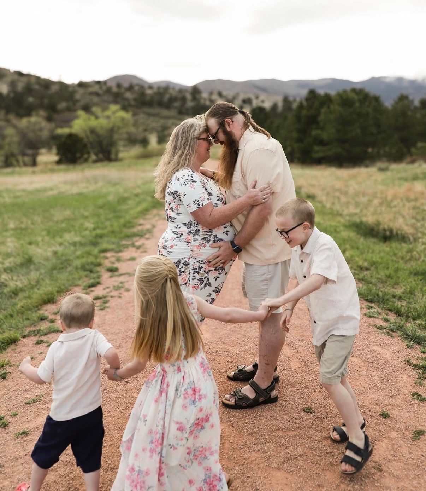
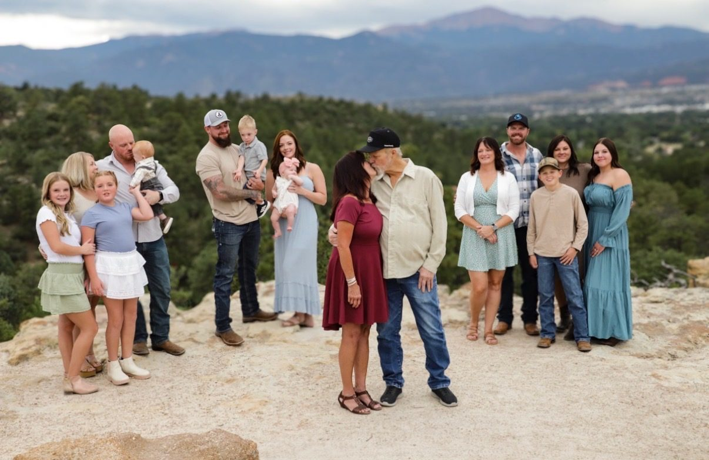
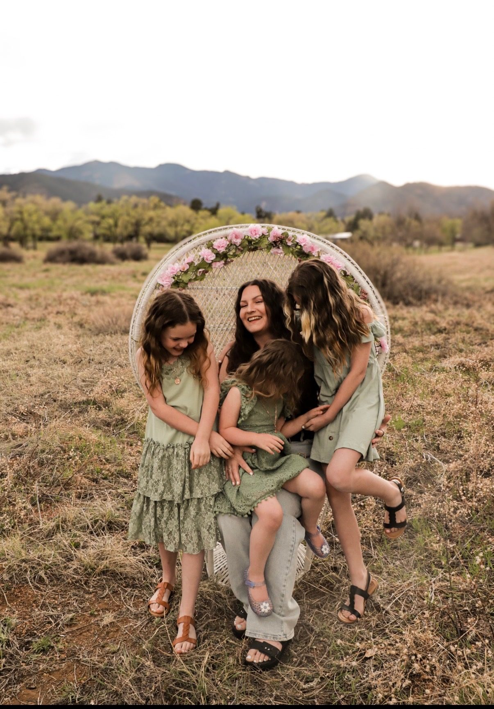
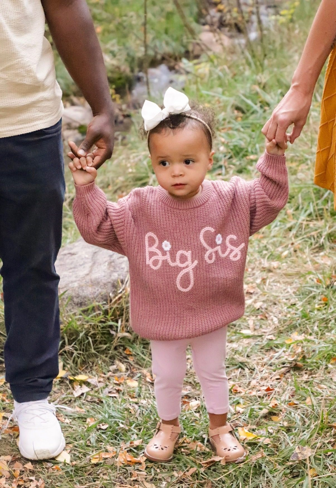
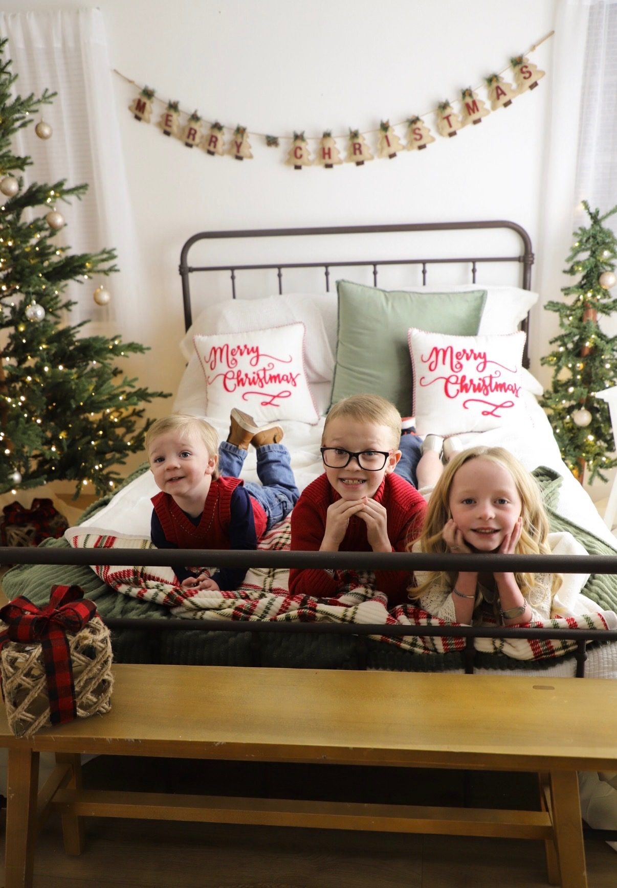

Portfolio
Recent sessions
Every caption carries the moment it marks — a month, an age, a class year. It's the detail that dates a picture better than a filename does.











Want something like this?
Sessions book a few weeks out, and spring and fall dates go first.